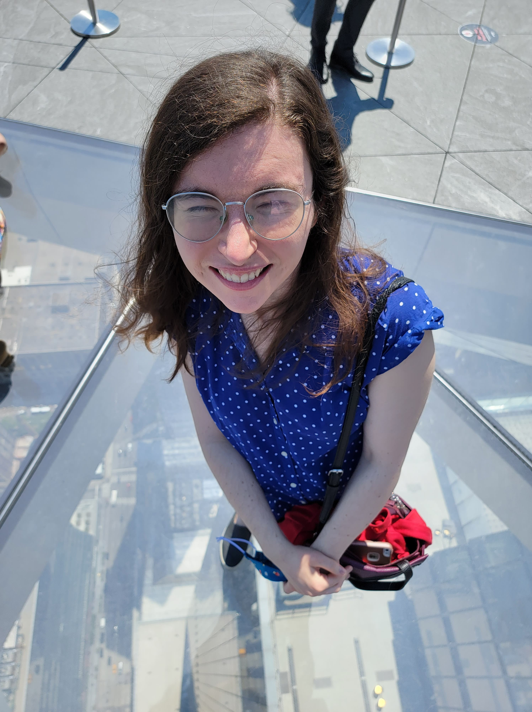

After a big day on Saturday, I don't think I did much on Sunday. I think my brother invited me to play Minecraft again, and I think that's becoming a bit of a problem. Distractions like that are keeping me from accomplishing all the work that I'd want to get done. Look at what's been accomplished over the past week or two. Not a lot. I've done a some work on dev tools and some bug fixing, but it really hasn't been a lot. I'll detail that more in this post, but in general, it's time to stop being distracted and to be productive.
I also got my second dose of the vaccine.
What a day. I got up and began to do work. I'm getting dangerously low on videos to post, so it was about time to get the next batch going. I started on writing the scripts, but I only got maybe one or two episodes before I started feeling nauseous and sleepy. I ended up sleeping through the entire day. It wasn't a deep sleep. It was off and on and I was apparently quite hot. We don't own a thermometer so we don't know for sure if I had a fever. But the worst part was what I was worrying about in my fever dreams. The Minecraft build of all things. Not the future of Solid or investment, but Minecraft! It's really an indication that my priorities are off kilter, and I need to concentrate on improving myself.
I still felt bad on Tuesday, but I was ready enough to finish writing the scripts for the next batch of videos. Though, I didn't get much else done :(
Wednesday began with some interesting news. Tim wants me to hop back on the (old) Databrowser project to upgrade it to the new authentication library. I know that I said I would never touch that codebase again, but then again. I need to be a productive member of society, and I feel I've been squandering that lately. Liqid Chat may have a couple hundred of sign ups, but it's ultimately daily active users that are the true measurement. And with no real community being developed on it, the active users are very low. I'm turning my attention to the next gen databrowser, but it will still be a while before that's available. Plus, doing this would get a good amount of money and make Tim happy. So, I accepted (Let's hope I don't regret it. The old databrowser codebase is the most infuriating codebase I've ever worked with). There are apparently still details Inrupt needs to get, so I'm just waiting on that.
After that, I had the pitch with Unshackled VC. I feel like I'm more positive directly after the meeting, then my feeling about how it went gets worse. It certainly wasn't the worst. I feel like pitching to Ali Partovi felt worse, but there were two VCs there and one seemed to really care a paying customers, and another one cared about users and it was a bit hard to navigate that because my target users are not paying customers. ultimately, in the rejection letter they said that I didn't have a good enough connection with my customers. That's true if you're talking about paying customers so maybe I need to focus on that a bit more.
I spent the rest of the day working on the Test Suite for the Subscribable Dataset library.
Thursday was the first day I truely felt like I was back "in it." I felt a lot more alert and less nauseous.
I was supposed to meet with David Segura, the investor Sai recommended, but he said he was ill and pushed it to next week.
I continued with the test suite. Because the subscribable dataset library is going to be the core of the next gen databrowser it's important for it to be well tested. I think I completed code coverage on everything other than the subscribable dataset class itself.
This was also the first time I exercised since getting the shot. Ailin and I went for a wonderful run around the East River park. While on the run I did some brainstorming about the feedback on paying customers. The current plan is to build the databrowser and get users and after that there would be a monitization strategy in either providing personal data storage for users or ethical advertising (People must completely understand where their data is going and consent in before it can be used for targeted ads.). But, there could be another business model. If what I claim is true, that building on the databrowser is faster than building a traditional application, then that means that theoretically, I could build the same product faster and cheaper than other dev shops. If I can make money building products for customers on the databrowser, that's already some financing plus it helps fills out the databrowser roster of applets and gets some users.
This wouldn't be an ordinary dev shop though. Customers would need to agree to the philosophy of Solid. They'd need to be okay with users keeping their own data. And I don't want to have to fight the uphill battle of convincing a customer that just wanted a standard dev shop, that actually Solid is the right fit for them at least in the beginning. That might be an easier battle to win if I have use cases under my belt. The first customer I pursue, needs to already be onboard with Solid. So, I thought about what customer might fit well. It's not an easy problem. Paul's been trying to grapple with this for a while. Then I remembered. Didier from Georgia Tech was interested in Solid. And GT would be the perfect first customer. It's a relatively big job and would target students, the most likely early adopters. Plus, they've already bought into the philosophy. So, if I can get Georgia Tech on board with Solid and more importantly the next gen databrowser, that might be the path the success.
On Friday, I had a discussion with a guy who's the founder of a flying suit company. He's also looking for funding and we swapped ideas. He might put me in contact with a friend who could help with funding, so we'll see where that goes.
I completed all the tests for my new package and wrote the documentation. Finally, I released it to NPM. Feels good to get that done, I can now focus on the next stage of building the next gen databrowser. Check out the package here!
On Saturday, Ailin's friends came up from Philly for a day in new York. We went to Chelsea market, the Edge, and to the Comedy Cellar. Check out these pics:

On Sunday, I finally finished the next chapter of Star Jump, and it's a depressing one. Though, I don't know. After reading it back, it feels a bit fast. Like I might need to put more padding in to draw out the saddness.
I also made a meme after discovering one of Ruben's old videos: